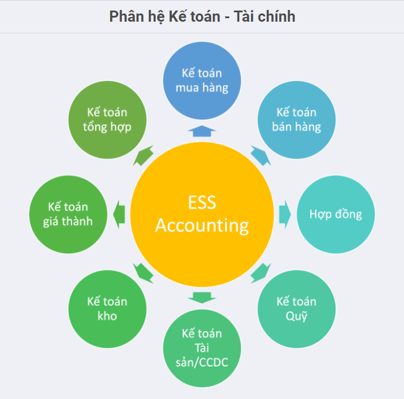

Giới thiệu về phân hệ Kế toán
Là nơi tập hợp tất cả dữ liệu tài chính từ mọi bộ phận trong Công ty. Phần mềm Kế toán sẽ xử lý tổng thể việc quản trị kế toán (sổ cái, các khoản phải thu, phải trả), mua hàng, bán hàng, kho vận và thanh toán.Cung cấp bức tranh toàn cảnh về tài chính doanh nghiệp. Hỗ trợ lập tài chính một cách hiệu quả
Phần mềm kế toán đáp ứng các Chế độ kế toán theo:
- Thông tư 200/2014/TT-BTC, hướng dẫn Chế độ kế toán Doanh nghiệp
- Thông tư 133/2016/TT-BTC, hướng dẫn chế độ kế toán doanh nghiệp nhỏ và vừa
Phần mềm Kế toán giúp Doanh nghiệp:
- Làm việc hiểu quả với các nghiệp phát sinh đều được định nghĩa bằng các tài khoản và quy tắc hạch toán thống nhất; Dữ liệu của kế toán được cập nhật và xử lý tự động, tích hợp nhiều phân hệ khác nhau trên cùng một hệ thống như: Mua hàng, Bán hàng, Kho..
- Dữ liệu chính xác với việc kiểm soát đơn hàng, kho hàng, hóa đơn nhà cung cấp. Quản lý luồng tiền vào ra trên hệ thống. Đồng thời, dự báo cụ thể về lịch trình thanh toán, các luồng chi phí phát sinh trong ngắn hạn, dài hạn.
- Tập hợp các dữ liệu đầy đủ và linh hoạt dựa trên các báo cáo tài chính. Truy suất dữ liệu đa chiều, nhanh chóng và chính xác. Đồng thời truy vết được các bút toán cấu thành một cách tức thì.
